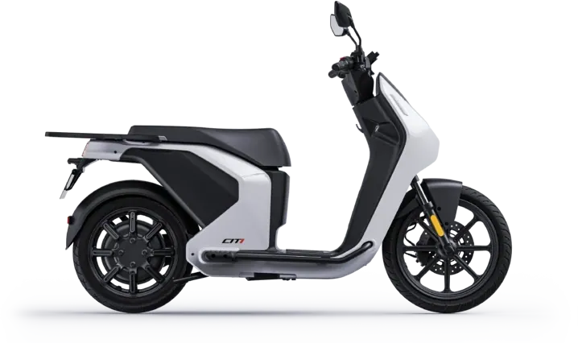
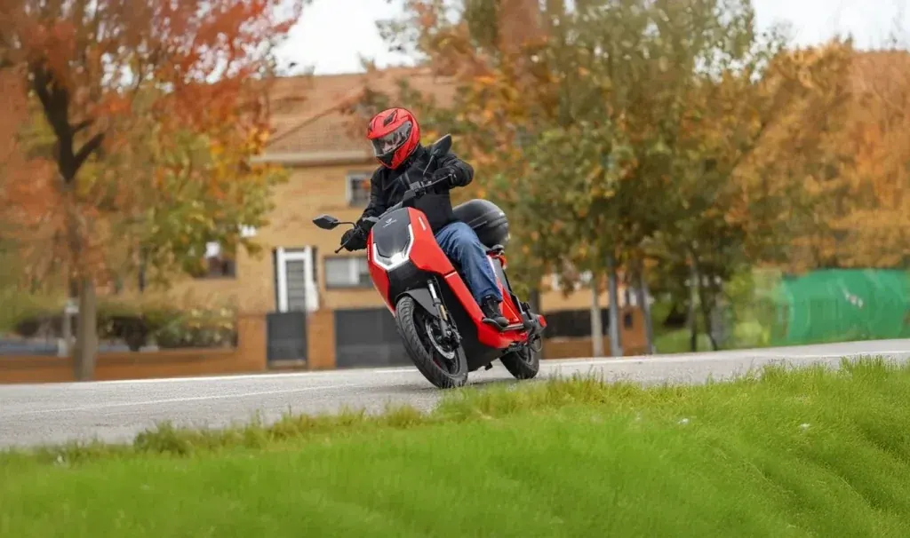
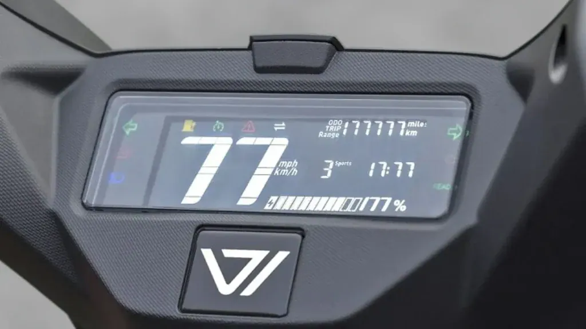
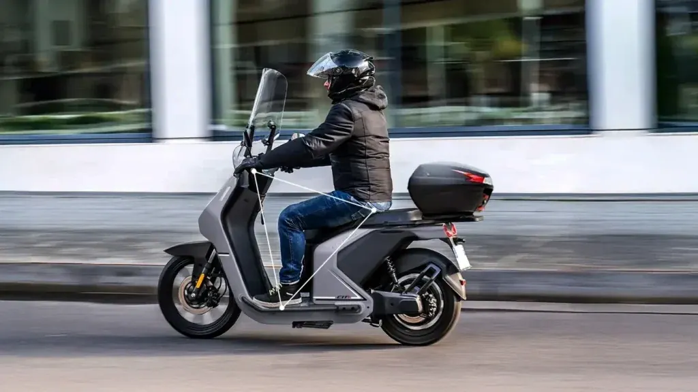

Vmoto
CU
AM Eléctrica · 2,4 kW · Scooter
Propuesta de OpsPilot para Expomoto Córdoba, en revisión. No es la web oficial: expomotocordoba.es

Vmoto
Diseño innovador pensado para el estilo de vida urbano actual
Precio y financiación: te los damos al momento por teléfono (pendientes de publicar en la web).



CITI redefine la movilidad urbana eléctrica con un diseño innovador, minimalista y elegante. Sus líneas limpias, proporciones equilibradas y detalles cuidados reflejan una estética moderna alineada con una movilidad inteligente y sostenible.
Su configuración de rueda alta, pensada específicamente para la ciudad, aporta mayor estabilidad, agilidad y confort en todo tipo de trayectos urbanos. Cada elemento está diseñado para combinar funcionalidad y estilo, convirtiendo a CITI no solo en un medio de transporte, sino en una auténtica declaración de diseño dentro del ecosistema de la micromovilidad sostenible.
CITI está diseñada para ofrecer el equilibrio perfecto entre confort y deportividad en movilidad urbana eléctrica. Su ergonomía optimizada garantiza una postura de conducción natural y relajada, reduciendo la fatiga incluso en trayectos largos por ciudad. Al mismo tiempo, su diseño dinámico mantiene la agilidad y las sensaciones de una moto real. Desarrollada por ingenieros expertos y sometida a rigurosas pruebas, CITI permite disfrutar durante horas de una conducción fluida, eficiente y con control total.
| Motor | Motor en rueda |
|---|---|
| Homologación | L1e – (Equivalente a 50cc) |
| Potencia nominal | 3.0 kW |
| Potencia máxima | 3.3 kW |
| Refrigeración | Aire |
| Velocidad máxima | 45 Km/h |
| Autonomía | 127 Km homologado con 2 baterías 1 batería 70 Km sin homologar |
| Ángulo de pendiente superable | 14° |
| Batería | Batería extraíble de polímero de litio |
| Número de baterías | 1 o 2 |
| Capacidad por batería | 2,2 kWh (74V 30Ah) |
| Tiempos carga por batería y cargador disponible | 3,5 h (0,72 kW) / 2 h (1,44 kW) / 0,3 h (6,6 kW de 0 a 80%) |
| Suspensión delantera | Doble brazo hidráulico |
| Suspensión trasera | Mono amortiguador hidráulico |
| Freno delantero | Disco |
| Freno trasero | Disco CBS |
| Neumáticos | Delantero 90/80-16 | Trasero 90/90-14 |
| Llantas | Delantera 2.15-16 | Trasera 2.5-14 |
| Distancia entre ejes | 1330 mm |
| Peso orden de marcha (sin baterías) | 92 kg (sin batería) |
| Largo x ancho x alto | 1970 mm*730 mm*1220 mm |
| Altura libre de suelo | 130 mm |
| Altura de asiento | 770 mm |
| Peso máximo admisible | 280 kg |
| Ocupantes | 2 |
| Colores | Negro, Blanco |
Datos de la marca, tal como se publican en expomotocordoba.es.